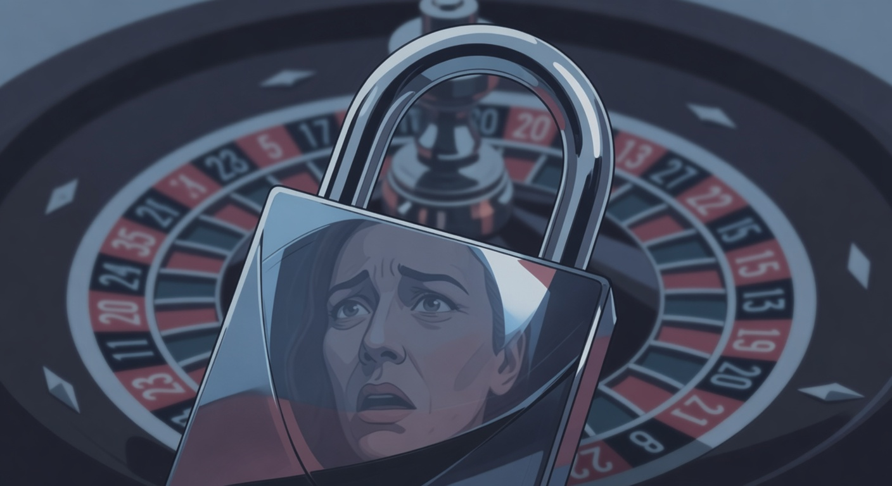
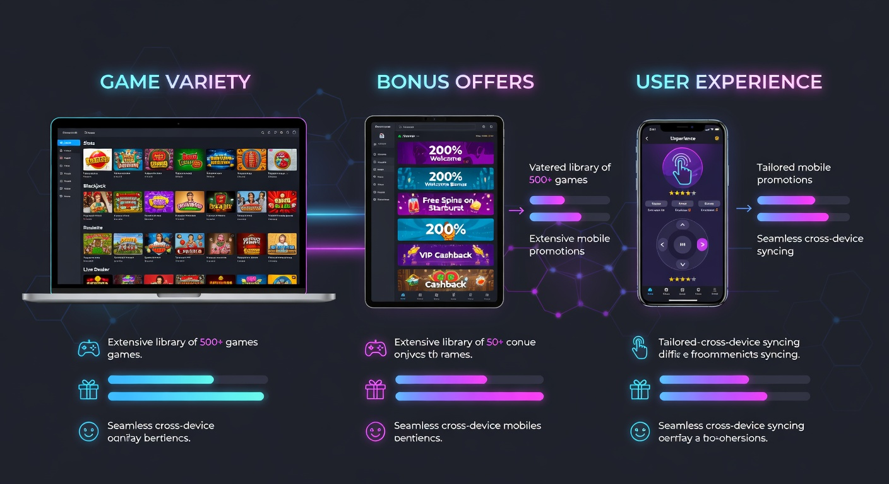
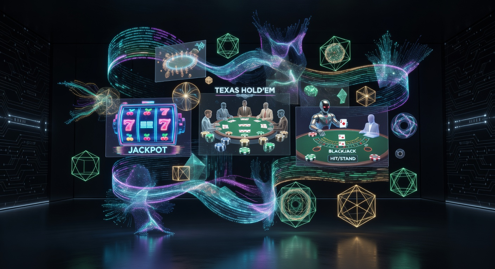
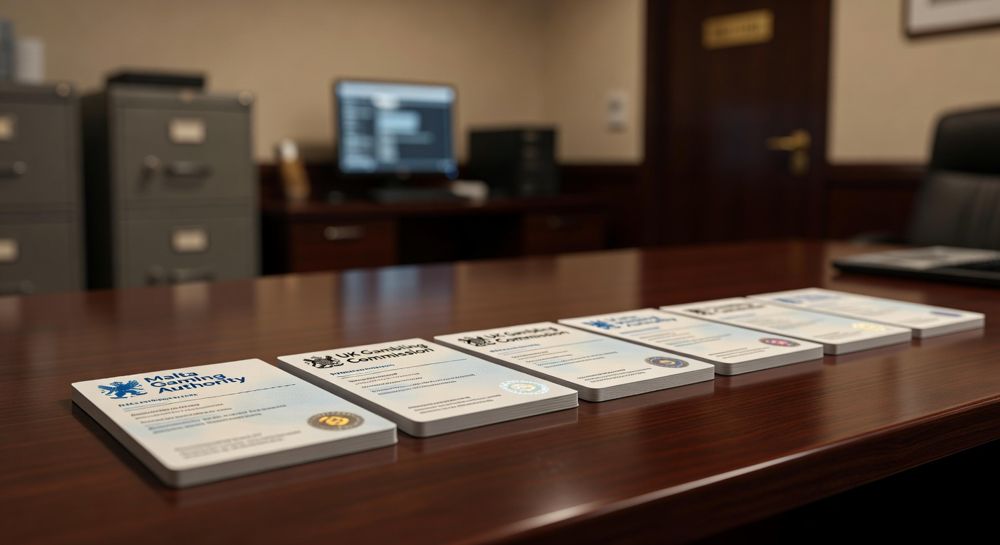

Nieuwe Online Casinos Zonder Cruks: De Complete Gids voor 2026
De wereld van het digitale gokken is in maart 2026 sneller in beweging dan ooit tevoren. Voor Nederlandse spelers die op zoek zijn naar vrijheid, diversiteit en innovatie, is de markt voor nieuwe Online Casinos Zonder Cruks de belangrijkste bestemming geworden. Terwijl de lokale regelgeving in Nederland steeds strikter wordt, met strengere speellimieten en indringende controles, bieden internationale platforms een adempauze voor de ervaren speler die zelf de regie wil houden over zijn speelgedrag.
In deze uitgebreide gids duiken we diep in de wereld van gokken zonder uitsluitingsregister. We analyseren waarom deze platforms in 2026 zo populair zijn, welke licenties garant staan voor veiligheid en waar je de beste bonussen kunt vinden. Of je nu een liefhebber bent van high-stakes slots of de voorkeur geeft aan een strategisch potje live blackjack, het aanbod bij nieuwe Online Casinos Zonder Cruks is dit jaar groter en geavanceerder dan we ooit hebben gezien.
Het landschap is echter complex. Niet elk platform dat claimt een beste online casino te zijn, voldoet aan de strenge eisen die wij stellen. Daarom hebben onze experts honderden sites getest op basis van uitbetalingssnelheid, klantenservice en de eerlijkheid van de gebruikte software. In de komende secties ontdek je alles wat je moet weten om veilig en verantwoord te genieten van het internationale aanbod.
Wat houdt een casino buiten het CRUKS-systeem precies in?
Wanneer we spreken over nieuwe Online Casinos Zonder Cruks, doelen we op goksites die niet over een Nederlandse Ksa-licentie beschikken en daarom niet aangesloten zijn op het Centraal Register Uitsluiting Kansspelen. Dit register is in Nederland verplicht voor alle lokale aanbieders. Het is bedoeld om spelers tegen zichzelf te beschermen door hen de mogelijkheid te bieden zich voor minimaal zes maanden uit te sluiten van alle legale Nederlandse kansspelwebsites en fysieke casino’s.
Een casino zonder Cruks-registratie opereert onder buitenlandse licenties, zoals die uit Malta, Curaçao of Kahnawake. Dit betekent niet dat er geen regels zijn, maar wel dat de specifieke Nederlandse blokkades hier niet van toepassing zijn. Voor spelers die per ongeluk in het register terecht zijn gekomen, of die simpelweg de privacygevoelige controles van de Nederlandse overheid willen omzeilen, bieden deze platforms een uitkomst. Het stelt hen in staat om te spelen bij een nieuwe online casino zonder dat elke storting of speelsessie direct wordt gemonitord door een centrale database.
Het is cruciaal om te begrijpen dat gokken buiten het register meer eigen verantwoordelijkheid vereist. Omdat er geen centraal systeem is dat je automatisch blokkeert, moet je zelf je grenzen bewaken. De meeste gerenommeerde nieuwe Online Casinos Zonder Cruks bieden echter hun eigen hulpmiddelen voor verantwoord gokken aan, zoals stortingslimieten en zelfuitsluiting op siteniveau, wat in maart 2026 de standaard is geworden voor kwalitatieve internationale aanbieders.
Wat is CRUKS?

CRUKS staat voor Centraal Register Uitsluiting Kansspelen. Het is een database die wordt beheerd door de Nederlandse Kansspelautoriteit. Sinds de opening van de legale Nederlandse markt is dit systeem de hoeksteen van de consumentenbescherming. Elke speler die zich inschrijft, wordt direct geblokkeerd bij alle casino's met een Nederlandse vergunning. Dit systeem is effectief voor mensen met een gokverslaving, maar het wordt door veel recreatieve spelers als te beperkend ervaren, vooral door de koppeling met DigiD.
In maart 2026 zijn de regels rondom dit register verder aangescherpt. Er wordt nu strenger gecontroleerd op speelgedrag en er zijn automatische triggers die spelers kunnen voordragen voor opname in het register, zelfs als zij dit zelf niet direct wensen. Dit heeft geleid tot een massale migratie naar nieuwe Online Casinos Zonder Cruks, waar de privacy van de speler hoger in het vaandel staat en waar men niet direct als "probleemgeval" wordt gemarkeerd bij een hogere inzet.
Het belangrijkste verschil is de reikwijdte. Terwijl CRUKS een landelijke dekking heeft binnen de Nederlandse grenzen, hebben buitenlandse sites geen toegang tot deze data. Hierdoor kun je bij een casino zonder deze koppeling gewoon een account aanmaken en spelen, mits je voldoet aan de internationale voorwaarden van het betreffende platform. Dit maakt een beste online casino buiten de Nederlandse jurisdictie een aantrekkelijk alternatief voor wie autonomie waardeert.
Top 10 Nieuwe Online Casinos Zonder Cruks Vergeleken

Om je te helpen navigeren door het enorme aanbod in maart 2026, hebben we een vergelijking gemaakt van de meest prominente aanbieders. Deze platforms onderscheiden zich door hun betrouwbaarheid, spelaanbod en bonusvoorwaarden.
| Casino Merk | Licentie | Welkomstbonus | Uniek Kenmerk |
|---|---|---|---|
| Goldbet | Curaçao | 100% tot €500 + 100 spins | Razendsnelle crypto uitbetalingen |
| Newlucky | Anjouan | 200% Match Bonus | Uitstekend VIP programma |
| Dragobet | MGA (Malta) | Bonus op eerste 3 stortingen | Groot aanbod Live Casino games |
| Fortunicabet | Kahnawake | 150% tot €750 | Geen wekelijkse uitbetalingslimiet |
| Spinorhino | Curaçao | Cashback tot 20% | Dagelijkse toernooien en quests |
Deze tabel toont aan dat er een grote variëteit is in het aanbod van nieuwe Online Casinos Zonder Cruks. Waar de één zich richt op bonussen, focust de ander op de snelheid van transacties. In de volgende secties zullen we enkele van deze topmerken in meer detail bespreken, zodat je precies weet wat je kunt verwachten wanneer je besluit over te stappen naar een casino zonder Nederlandse beperkingen.
Hoe wij deze goksites hebben getest op betrouwbaarheid
Betrouwbaarheid is de belangrijkste factor bij onze beoordelingen van nieuwe Online Casinos Zonder Cruks. Omdat deze sites buiten de directe controle van de Nederlandse Ksa vallen, is een grondige screening essentieel. We beginnen altijd met het verifiëren van de licentie. Een casino zonder geldige vergunning krijgt van ons geen vermelding. We controleren het licentienummer direct bij de autoriteit (zoals de MGA of de Curaçao Gaming Control Board).
Daarnaast kijken we naar de softwareleveranciers. Een beste online casino werkt samen met gerenommeerde namen zoals Pragmatic Play en NetEnt. Deze providers laten hun spellen onafhankelijk testen door instanties als eCOGRA, wat eerlijke kansen garandeert. We storten ook zelf geld om het proces van iDEAL of crypto-transacties te testen, waarbij we vooral letten op hoe snel het geld daadwerkelijk op de rekening staat en of er verborgen kosten zijn.
Ten slotte testen we de klantenservice. In maart 2026 verwachten we een 24/7 live chat die binnen enkele minuten reageert. Onze ervaring leert dat de klantenservice van nieuwe Online Casinos Zonder Cruks vaak internationaler georiënteerd is, wat betekent dat je meestal in het Engels wordt geholpen, al zien we ook steeds vaker Nederlandstalige ondersteuning via AI-vertalingen die in 2026 verbazingwekkend accuraat zijn.
Nieuw Online Casino: De Trends van Maart 2026

De markt voor een nieuw online casino in 2026 ziet er heel anders uit dan enkele jaren geleden. De focus is verschoven van simpelweg "online zijn" naar het bieden van een complete entertainmentervaring. Virtual Reality (VR) integraties zijn steeds vaker de standaard, waardoor je in een casino zonder Cruks-restricties letterlijk door een virtuele lobby kunt lopen en plaats kunt nemen aan een blackjacktafel met andere spelers uit de hele wereld.
Een andere trend bij nieuwe Online Casinos Zonder Cruks is de verregaande gamificatie. Spelers willen niet meer alleen op een knop drukken; ze willen voortgang boeken. Dit uit zich in RPG-elementen waarbij je een personage opbouwt, missies voltooit en unieke beloningen ontgrendelt. Deze elementen vind je zelden terug in de conservatieve Nederlandse markt, wat een van de redenen is waarom een beste online casino uit het buitenland zo aantrekkelijk blijft.
Bovendien zien we in maart 2026 een enorme groei in het gebruik van kunstmatige intelligentie voor gepersonaliseerde bonussen. Bij een casino met moderne technologie krijg je aanbiedingen die specifiek zijn afgestemd op jouw favoriete slots of tafelspellen. Als je vaak op Pragmatic Play titels speelt, zal het systeem dit herkennen en je gratis spins aanbieden voor hun nieuwste releases, wat de spelerservaring aanzienlijk verbetert.
Waarom kiezen Nederlandse spelers voor een buitenlands aanbod?
De motivatie om te spelen bij nieuwe Online Casinos Zonder Cruks is voor elke speler anders, maar er zijn enkele universele redenen. Ten eerste is er de kwestie van privacy. In Nederland moet je via iDIN je identiteit bevestigen, wat een directe link legt tussen je bankrekening en je gokactiviteiten. Veel spelers vinden dit een inbreuk op hun persoonlijke levenssfeer en geven de voorkeur aan een casino zonder deze diepgaande koppeling.
Ten tweede zijn de bonussen bij een beste online platform buiten Nederland simpelweg vele malen hoger. De Nederlandse wetgeving stelt strikte paal en perk aan promoties, terwijl nieuwe Online Casinos Zonder Cruks welkomstpakketten kunnen aanbieden die oplopen tot duizenden euro's. Ook acties zoals "cashback", waarbij je een deel van je verlies terugkrijgt, zijn internationaal veel gebruikelijker en lucratiever.
Tot slot speelt het spelaanbod een grote rol. Door de beperkingen van de Kansspelautoriteit zijn bepaalde spellen of features (zoals de "Bonus Buy" optie op slots) in Nederland verboden. Bij nieuwe Online Casinos Zonder Cruks heb je volledige toegang tot alle creaties van NetEnt en andere topontwikkelaars, inclusief de functies die het spel extra spannend maken. Voor de serieuze gokker biedt een casino zonder deze beperkingen simpelweg een completere ervaring.
Belangrijke licenties voor veilig gokken zonder beperkingen

Hoewel nieuwe Online Casinos Zonder Cruks niet onder Nederlands toezicht staan, betekent dit niet dat ze wetteloos zijn. Integendeel, de meest betrouwbare sites hebben licenties van internationaal gerespecteerde toezichthouders. Deze licenties zorgen ervoor dat de spellen eerlijk verlopen en dat je geld veilig is. In maart 2026 zijn er vier hoofdlicenties waar je op moet letten bij het kiezen van een casino zonder Cruks.
Malta Gaming Authority (MGA)
De MGA wordt algemeen beschouwd als de gouden standaard binnen de Europese Unie. Een beste online casino met een MGA-licentie moet voldoen aan zeer strenge eisen op het gebied van spelerbescherming en anti-witwaspraktijken. Hoewel deze casino's geen Cruks gebruiken, hanteren ze wel zeer rigoureuze eigen protocollen. Als Nederlander speel je hier met een hoog niveau van consumentenbescherming, vergelijkbaar met de Nederlandse standaard, maar met meer vrijheid.
Kahnawake Gaming Commission
De Kahnawake licentie uit Canada wint in maart 2026 aan populariteit onder nieuwe Online Casinos Zonder Cruks. Deze autoriteit staat bekend om haar lange geschiedenis in de sector en haar focus op integriteit. Voor een casino met deze licentie geldt dat zij vaak spelers uit de hele wereld accepteren, wat zorgt voor een zeer diverse en liquide spelerspool, vooral bij poker en live casino spellen.
Curaçao Gaming Control Board
Curaçao is de meest voorkomende licentie voor nieuwe Online Casinos Zonder Cruks. In het verleden had deze licentie een wisselvallige reputatie, maar door grootschalige hervormingen in 2024 en 2025 is de kwaliteit in maart 2026 uitstekend. Het grote voordeel van een casino zonder Europese beperkingen dat hier gevestigd is, is de acceptatie van cryptovaluta zoals Bitcoin. Dit biedt een extra laag anonimiteit en snelheid die veel spelers zeer waarderen.
Anjouan Gaming License
Een relatief nieuwe speler op de markt is de Anjouan licentie. Veel nieuwe Online Casinos Zonder Cruks kiezen voor deze jurisdictie vanwege de efficiënte regelgeving en de mogelijkheid om snel te innoveren. Hoewel minder bekend dan de MGA, zien we dat platforms met deze licentie vaak zeer moderne interfaces en unieke loyaliteitsprogramma's aanbieden. Het is een licentie die we in maart 2026 steeds vaker zien bij opkomende topmerken.
De nieuwste bonussen bij nieuwe online casinos zonder Cruks
De bonusstructuren in maart 2026 zijn innovatiever dan ooit. Bij nieuwe Online Casinos Zonder Cruks word je niet alleen verwelkomd met een eenmalig bedrag, maar vaak met een heel pakket aan voordelen. Een casino zonder de strikte bonusregels van de Ksa kan het zich veroorloven om creatiever te zijn. Denk aan bonussen zonder rondspeelvoorwaarden of exclusieve toernooien voor nieuwe spelers.
Een beste online casino in deze categorie begrijpt dat retentie essentieel is. Daarom zie je vaak dat de tweede, derde en zelfs vierde storting ook worden beloond. Dit zorgt ervoor dat je langer met je speelgeld kunt doen. Daarnaast zijn gratis spins vaak onderdeel van de welkomstdeal, waarbij je direct de nieuwste slots van topontwikkelaars kunt uitproberen zonder je eigen saldo aan te spreken.
Het is wel belangrijk om altijd de kleine lettertjes te lezen. Ook bij nieuwe Online Casinos Zonder Cruks zijn er voorwaarden verbonden aan een bonus. Let vooral op de "wagering requirements" (rondspeelvoorwaarden). In maart 2026 zien we dat een ratio van 30x tot 40x de standaard is. Alles daaronder is zeer gunstig en een teken dat je bij een casino met een eerlijke instelling speelt.
Hoge welkomstbonussen en cashback deals
Welkomstbonussen bij nieuwe Online Casinos Zonder Cruks kunnen variëren van 100% tot wel 500% match op je eerste storting. Dit betekent dat als je €100 stort, je met €600 kunt spelen. Dit soort aanbiedingen zul je in het legale Nederlandse circuit nooit vinden. Voor een nieuw online casino 2026 is dit de manier om op te vallen in een verzadigde markt.
Cashback deals zijn misschien wel de meest waardevolle promoties van dit moment. In plaats van een bonus vooraf, krijg je achteraf een percentage van je nettoverlies terug. Bij een beste online platform kan dit oplopen tot 20% per week. Het mooie van cashback is dat er vaak geen of zeer lage rondspeelvoorwaarden aan verbonden zijn, waardoor het feitelijk gratis geld is dat je direct weer kunt inzetten of laten uitbetalen.
Loyaliteitsprogramma's voor actieve spelers
Voor wie regelmatig speelt bij nieuwe Online Casinos Zonder Cruks, zijn de VIP-programma's van onschatbare waarde. In maart 2026 zijn deze programma's vaak volledig geautomatiseerd. Hoe meer je speelt, hoe hoger je klimt in de rangorde. Elke nieuwe rang ontgrendelt extra voordelen, zoals een persoonlijke accountmanager, hogere uitbetalingslimieten en exclusieve uitnodigingen voor evenementen.
Bij een casino zonder Cruks-beperkingen zijn deze programma's vaak veel genereuzer. Je kunt punten sparen die inwisselbaar zijn voor gadgets, luxe reizen of puur speelkrediet. Dit maakt de ervaring bij een een casino buiten de Nederlandse grenzen niet alleen leuker, maar op de lange termijn ook potentieel winstgevender voor de loyale bezoeker. Het gevoel dat je gewaardeerd wordt als klant is een groot pluspunt.
Beschikbare betaalmethoden: iDEAL, Crypto en Creditcards
Een van de grootste zorgen voor Nederlanders bij nieuwe Online Casinos Zonder Cruks is de betaalmethode. Gelukkig is iDEAL in maart 2026 nog steeds vaak beschikbaar, ook bij internationale aanbieders. Vaak gebeurt dit via een tussenpersoon of een vergelijkbare instant banking methode zoals Klarna of Trustly. Dit zorgt ervoor dat je op de vertrouwde manier via je eigen bank kunt storten bij een casino zonder gedoe.
Daarnaast is de opkomst van crypto niet meer te stuiten. Veel nieuwe Online Casinos Zonder Cruks accepteren Bitcoin, Ethereum en stablecoins zoals USDT. De voordelen zijn duidelijk: onmiddellijke transacties, minimale kosten en een hoge mate van privacy. Voor spelers die nieuwe online casino echt geld inzetten, biedt crypto een moderne en veilige manier om hun bankroll te beheren zonder tussenkomst van traditionele banken.
Ook de klassieke creditcards (Visa, Mastercard) blijven populair bij een beste online casino. Bovendien zien we steeds meer e-wallets zoals Revolut, MiFinity en Jeton. Deze methoden zijn ideaal omdat ze een barrière vormen tussen je casino-activiteiten en je hoofdbankrekening, wat handig is voor je financiële overzicht. Bij een casino met een breed scala aan betaalopties zit er altijd wel een methode tussen die bij jouw voorkeuren past.
Is spelen bij nieuwe online casinos zonder Cruks legaal in Nederland?
De juridische status van spelen bij nieuwe Online Casinos Zonder Cruks is een veelbesproken onderwerp. Vanuit het perspectief van de Nederlandse overheid is het aanbieden van kansspelen zonder Ksa-licentie aan de Nederlandse markt niet toegestaan. Echter, als individuele speler ben je in maart 2026 niet strafbaar als je besluit te spelen op een buitenlands platform. De wetgeving richt zich op de aanbieders, niet op de consumenten.
Dit betekent dat je als speler zelf de verantwoordelijkheid draagt voor je keuze. Wanneer je kiest voor een casino zonder Nederlandse vergunning, kun je bij conflicten geen beroep doen op de Nederlandse Kansspelautoriteit. Daarom hameren wij zo op het belang van een sterke internationale licentie zoals de MGA. Een beste online platform zal altijd zijn reputatie willen beschermen en geschillen op een professionele manier oplossen via hun eigen toezichthouder.
Wat betreft belastingen: in Nederland is de kansspelbelasting verschoven naar de aanbieder. Bij een buitenlands casino zonder Nederlandse vestiging is het echter jouw eigen plicht om eventuele winsten boven de wettelijke vrijstelling aan te geven bij de Belastingdienst. In maart 2026 zijn de regels hiervoor vrij duidelijk, maar het is altijd raadzaam om een financieel adviseur te raadplegen als je grote bedragen wint bij nieuwe Online Casinos Zonder Cruks.
De rol van de Kansspelautoriteit (Ksa) en de KOA-wet
De Ksa houdt scherp toezicht op de naleving van de Wet Kansspelen op Afstand (KOA). Hun doel is om de Nederlandse speler naar het legale aanbod te leiden. Ze doen dit door boetes uit te delen aan buitenlandse nieuwe Online Casinos Zonder Cruks die zich te expliciet op Nederland richten (bijvoorbeeld door een .nl domein of de Nederlandse vlag te gebruiken). In maart 2026 zien we dat de Ksa ook probeert om betaalproviders te blokkeren die transacties naar illegale sites faciliteren.
Desondanks blijft de vraag naar een casino zonder Cruks onverminderd groot. De KOA-wet wordt door sommigen gezien als te betuttelend. Terwijl de Ksa streeft naar een "veilige omgeving", ervaren veel spelers dit als een omgeving met te weinig vrijheid en te lage bonussen. Hierdoor ontstaat er een kat-en-muisspel tussen de autoriteit en de nieuwe Online Casinos Zonder Cruks, waarbij de speler vaak de lachende derde is met meer keuzevrijheid.
Top 5 Aanbevolen Merken voor Maart 2026
Op basis van onze uitgebreide tests en de feedback van duizenden Nederlandse spelers, zijn dit de vijf absolute topaanbevelingen voor wie wil spelen bij nieuwe Online Casinos Zonder Cruks in maart 2026. Elk van deze merken biedt een unieke ervaring en voldoet aan onze strengste veiligheidseisen.
- Goldbet: Dit platform is de onbetwiste leider als het gaat om snelheid. Met een moderne interface en een gigantisch aanbod aan sportweddenschappen naast het casino, is Goldbet een uitstekende keuze voor de allround gokker. Ze staan bekend om hun probleemloze verificatieproces en snelle uitbetalingen via diverse methoden.
- Newlucky: Voor spelers die op zoek zijn naar een fris design en innovatieve features, is Newlucky de plek. Dit nieuw online casino biedt een uniek gelukswiel-mechanisme waarmee je dagelijks extra prijzen kunt winnen, bovenop de al zeer gulle welkomstbonus.
- Dragobet: Als je een passie hebt voor het Live Casino, dan mag Dragobet niet ontbreken op je lijstje. Ze werken samen met alle grote providers, waardoor je toegang hebt tot honderden tafels met professionele dealers. Hun VIP-service voor high-rollers is een van de beste in de sector in maart 2026.
- Fortunicabet: Dit is een beste online optie voor wie houdt van eenvoud en transparantie. Bij Fortunicabet zijn de bonusvoorwaarden helder en is de navigatie op de site vlijmscherp, zelfs op mobiele apparaten. Een zeer betrouwbaar casino zonder overbodige franje.
- Spinorhino: Voor de liefhebbers van slots is Spinorhino een paradijs. Met duizenden titels van Pragmatic Play, NetEnt en vele anderen, raak je hier nooit uitgespeeld. Hun wekelijkse toernooien bieden enorme prijzenpotten voor de meest actieve spelers.
Deze vijf nieuwe Online Casinos Zonder Cruks hebben bewezen dat ze in 2026 tot de top van de wereldmarkt behoren. Of je nu prioriteit geeft aan bonussen, spelselectie of uitbetalingslimieten, een van deze merken zal zeker aan je behoeften voldoen. Onthoud altijd om de specifieke voorwaarden van elk casino met een bonus goed te controleren voordat je begint.
Registratieprocedure bij een casino zonder Cruks
Een van de grootste voordelen van nieuwe Online Casinos Zonder Cruks is de eenvoud van het registratieproces. Waar je bij Nederlandse sites vaak minutenlang bezig bent met DigiD en het uploaden van talloze documenten voordat je überhaupt de lobby ziet, is een casino zonder deze verplichtingen veel efficiënter. In maart 2026 duurt het aanmaken van een account bij een beste online platform meestal minder dan twee minuten.
Het proces begint vaak met het invullen van je e-mailadres en een wachtwoord. Daarna volgen enkele basisgegevens. Wat in maart 2026 erg populair is bij nieuwe Online Casinos Zonder Cruks, zijn de zogenaamde "No Account" opties of snelle registraties via sociale media of crypto-wallets. Dit minimaliseert de hoeveelheid data die je moet delen en versnelt het proces aanzienlijk, waardoor je direct kunt genieten van je favoriete slots.
Hoewel de registratie snel gaat, moet je er rekening mee houden dat elk legitiem nieuw online casino uiteindelijk een KYC (Know Your Customer) check zal uitvoeren, meestal bij de eerste grote uitbetaling. Dit is een internationale standaard om fraude te voorkomen. Het voordeel bij nieuwe Online Casinos Zonder Cruks is echter dat dit proces vaak veel soepeler en minder bureaucratisch verloopt dan bij de Nederlandse tegenhangers.
Spelaanbod: Slots, Live Casino en Tafelspellen
In maart 2026 is de kwaliteit van de spellen bij nieuwe Online Casinos Zonder Cruks naar een ongekend niveau gestegen. De samenwerking met top-ontwikkelaars zorgt voor een aanbod dat vele malen groter is dan bij de lokale Nederlandse aanbieders. Je vindt hier niet alleen de klassiekers, maar ook de meest experimentele nieuwe titels die vaak als eerste worden uitgebracht op de internationale markt.
De categorie slots is veruit de grootste. Van eenvoudige fruitautomaten tot complexe video slots met duizenden winlijnen (Megaways) en cinematografische animaties. Bij een beste online casino buiten Cruks heb je ook toegang tot progressieve jackpots die in de miljoenen euro's kunnen lopen, iets wat in de Nederlandse gereguleerde markt vaak aan strengere limieten gebonden is.
Het Live Casino segment heeft in 2026 een enorme vlucht genomen. Dankzij snellere internetverbindingen en betere streamingtechnologie voelt het alsof je echt aan de tafel zit. Populaire spelshows zoals "Crazy Time" of "Lightning Roulette" zijn bij nieuwe Online Casinos Zonder Cruks altijd beschikbaar, vaak met hogere inzetlimieten voor wie dat wenst. Dit maakt een casino met een internationaal publiek veel levendiger en spannender.
Pragmatic Play en NetEnt: De Giganten
Geen enkel serieus nieuw online casino 2026 kan zonder de titels van Pragmatic Play. Hun spellen zoals "Gates of Olympus" en "Sweet Bonanza" blijven wereldwijd favoriet vanwege hun hoge volatiliteit en spannende bonusrondes. Bij nieuwe Online Casinos Zonder Cruks vind je vaak het volledige portfolio van deze provider, inclusief hun uitgebreide live dealer aanbod dat in 2026 de markt domineert.
Ook NetEnt blijft een cruciale speler. Bekend om hun grafische perfectie en innovatieve mechanieken, bieden zij games die zowel visueel aantrekkelijk als eerlijk zijn. Een casino zonder NetEnt spellen wordt door veel ervaren gokkers niet serieus genomen. De aanwezigheid van deze grote namen is voor jou als speler ook een extra bevestiging van de betrouwbaarheid van het platform, aangezien deze providers niet samenwerken met malafide partijen.
Voor- en nadelen van gokken op internationale platforms
Zoals bij elke keuze zijn er aan het spelen bij nieuwe Online Casinos Zonder Cruks zowel positieve als negatieve kanten verbonden. Het is belangrijk om een gebalanceerd beeld te hebben voordat je besluit waar je je geld inzet. Voor veel spelers wegen de voordelen zwaarder, maar de nadelen mogen niet genegeerd worden.
Voordelen:
- Veel hogere bonussen en betere cashback deals dan in Nederland.
- Geen beperkingen door het CRUKS-register, wat meer vrijheid biedt.
- Groter en gevarieerder spelaanbod, inclusief "Bonus Buy" features.
- Acceptatie van moderne betaalmethoden zoals crypto en Bitcoin.
- Privacy: Geen koppeling met je DigiD of nationale databases.
Nadelen:
- Geen bescherming door de Nederlandse Kansspelautoriteit bij conflicten.
- Zelfbeheersing is essentieel door het ontbreken van centrale limieten.
- Klantenservice is vaak in het Engels (al is AI-vertaling in 2026 erg goed).
- Je moet zelf je winsten aangeven bij de Belastingdienst indien van toepassing.
Voor de bewuste speler die weet wat hij doet, bieden nieuwe Online Casinos Zonder Cruks een superieure ervaring. Ben je echter iemand die moeite heeft om maat te houden, dan is de extra bescherming van het Nederlandse systeem wellicht toch de betere keuze. Kennis van je eigen speelstijl is hierin cruciaal.
Verantwoord gokken wanneer er geen centraal register is
Hoewel we praten over een casino zonder centraal register, is verantwoord gokken in maart 2026 belangrijker dan ooit. De beste nieuwe Online Casinos Zonder Cruks nemen hun verantwoordelijkheid serieus. Ze bieden tools aan in je accountinstellingen waarmee je jezelf kunt beschermen. Denk aan dagelijkse, wekelijkse of maandelijkse stortingslimieten, sessie-timers en verlieslimieten.
Het grote verschil is dat deze instellingen op vrijwillige basis zijn en per casino met zorg moeten worden ingesteld. Als je merkt dat het gokken geen plezier meer brengt maar een last wordt, bieden deze platforms ook de optie tot zelfuitsluiting. Dit blokkeert je account voor een bepaalde periode of permanent. In maart 2026 zien we ook dat internationale organisaties zoals GamCare en BeGambleAware nauw samenwerken met buitenlandse casino's om spelers te ondersteunen.
Een handige tip voor spelers bij nieuwe Online Casinos Zonder Cruks is om gebruik te maken van software van derden, zoals BetBlocker of Gamban. Deze tools werken op je apparaat en kunnen de toegang tot alle goksites blokkeren, ongeacht of ze nu wel of niet in een register staan. Zo behoud je de ultieme controle over je digitale omgeving, terwijl je toch geniet van de voordelen van een beste online internationale ervaring wanneer je wel verantwoord kunt spelen.
Tonybet en de Evolutie van de Markt
Een interessant voorbeeld in de markt is Tonybet. Hoewel zij in sommige regio's licenties hebben, illustreren zij hoe een internationaal platform zich kan aanpassen aan verschillende markten. In maart 2026 zien we veel nieuwe Online Casinos Zonder Cruks die een vergelijkbare strategie hanteren: een wereldwijd platform met lokale nuances. Dit zorgt voor een vertrouwde omgeving, maar met de voordelen van een enorme, internationale infrastructuur.
De aanwezigheid van gevestigde namen in de periferie van de markt voor nieuwe Online Casinos Zonder Cruks zorgt voor een natuurlijke selectie. Spelers kiezen vaker voor platforms die een bewezen staat van dienst hebben. Dit heeft de kwaliteit van de gehele sector omhoog gestuwd. Een beste online casino in 2026 kan het zich simpelweg niet veroorloven om minder dan perfecte service te bieden, omdat de concurrentie moordend is.
Bovendien zien we dat de scheidslijn tussen "Nederlands" en "Buitenlands" vervaagt door de kwaliteit van de lokalisatie. Een modern casino zonder fysieke aanwezigheid in Nederland kan door AI en data-analyse een ervaring bieden die naadloos aansluit op de wensen van de Nederlandse consument, van de spelselectie tot de aangeboden betaalmethoden zoals iDEAL.
VIP-programma’s en Reloadbonussen
Bij nieuwe Online Casinos Zonder Cruks stopt het niet bij de welkomstbonus. In maart 2026 is de "Reloadbonus" een standaardonderdeel geworden van de promotiekalender. Elke week, of soms zelfs elke dag, kun je een extra bonus krijgen op je storting. Dit houdt de balans gezond en geeft je meer kansen om die grote winst op je favoriete slots te pakken.
VIP-programma's in 2026 zijn veel meer dan alleen een status. Ze bieden tastbare voordelen die direct invloed hebben op je rendement. Denk aan verlaagde rondspeelvoorwaarden voor je bonussen, of zelfs "wager-free" gratis spins. Voor een casino met een focus op lange-termijn relaties is het VIP-programma het belangrijkste gereedschap om spelers tevreden te houden.
Sommige nieuwe Online Casinos Zonder Cruks gaan nog een stap verder en bieden fysieke beloningen. In maart 2026 is het niet ongebruikelijk dat top-VIP's worden uitgenodigd voor exclusieve reizen naar Las Vegas of Macau, of dat zij de nieuwste tech-gadgets thuisgestuurd krijgen. Dit niveau van luxe en persoonlijke aandacht vind je zelden bij de Nederlandse Ksa-aanbieders, wat de overstap naar een beste online internationaal platform extra aantrekkelijk maakt.
Conclusie: De beste keuze maken voor jouw speelstijl
Het landschap van nieuwe Online Casinos Zonder Cruks in maart 2026 biedt ongekende mogelijkheden voor de Nederlandse speler. Of je nu op zoek bent naar de hoogste bonussen, de meest moderne cryptobetalingen of simpelweg een spelaanbod dat niet wordt beperkt door lokale regels, er is een overvloed aan veilige en betrouwbare opties. Merken als Goldbet, Newlucky en Dragobet laten zien dat vrijheid en veiligheid heel goed hand in hand kunnen gaan.
Het belangrijkste is dat je als speler geïnformeerd bent. Kies altijd voor een casino zonder Cruks dat beschikt over een valide internationale licentie en een goede reputatie. Gebruik de beschikbare tools voor verantwoord gokken om je ervaring positief te houden. Het internationale aanbod is er om je meer plezier en spanning te bieden, mits je met beleid speelt.
In 2026 is de gokmarkt transparanter en technologisch geavanceerder dan ooit. Door te kiezen voor een beste online platform uit onze aanbevolen lijst, verzeker je jezelf van een eerlijke kans, snelle uitbetalingen en de allerbeste bonussen die er momenteel te vinden zijn. De wereld van het online casino ligt aan je voeten – speel slim en geniet van de vrijheid.
Veelgestelde vragen over gokken zonder registratie in het register
Is een casino zonder Cruks wel veilig voor Nederlanders?
Ja, mits het casino beschikt over een betrouwbare licentie zoals die van de MGA of Curaçao. Deze nieuwe Online Casinos Zonder Cruks worden streng gecontroleerd op de eerlijkheid van hun spellen en de veiligheid van hun financiële transacties.
Kan ik met iDEAL betalen bij deze nieuwe platforms?
Vaak wel. Hoewel directe iDEAL integratie soms lastiger is voor buitenlandse partijen, gebruiken veel nieuwe Online Casinos Zonder Cruks handige tussenoplossingen die precies hetzelfde werken, waardoor je gewoon via je eigen Nederlandse bank kunt betalen.
Zijn de winsten bij een beste online casino zonder Cruks belastingvrij?
In principe moet je over winsten bij buitenlandse casino's zelf aangifte doen bij de Belastingdienst als deze boven de vrijstellingsgrens uitkomen. Het is verstandig om dit in maart 2026 goed te controleren op de website van de fiscus.
Wat zijn de voordelen van gokken met Bitcoin in 2026?
Gokken met Bitcoin bij nieuwe Online Casinos Zonder Cruks biedt meer privacy, vaak snellere (vrijwel onmiddellijke) uitbetalingen en soms zelfs speciale crypto-bonussen die hoger zijn dan de standaard aanbiedingen.
Hoe kan ik mezelf uitsluiten bij een casino zonder Cruks?
Elk gerenommeerd nieuw online casino biedt eigen tools voor zelfuitsluiting. Je kunt dit meestal regelen via je accountinstellingen of door contact op te nemen met de klantenservice. Voor een volledige blokkade over meerdere sites kun je software zoals Gamban gebruiken.

Expert in online casino's en digitaal gokken met meer dan 8 jaar ervaring in de sector.